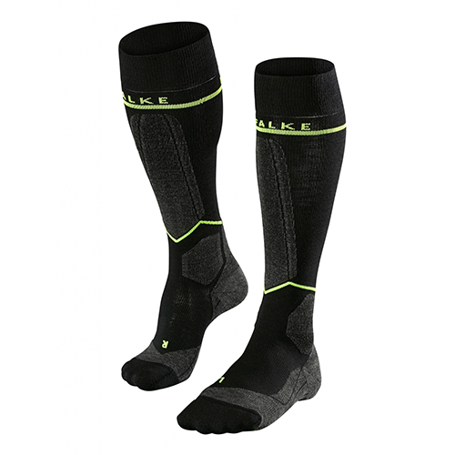

Loopsokken
Dit is een paar compressiesokken. Deze zijn gemaakt om extra druk te geven aan de benen. Zo voorkomen ze het ophopen van vocht en oedeem. Ze zijn gebreid en passen zich aan aan elk beenformaat. Zo zal u niet alleen tijdens uw activiteit geen last ervaren, maar ook erna niet!
Kenmerken
- Kleur
- Zwart
- Patroon
- Geen
- Beschikbaar in maten
- 32 - 36
- 37 - 42
- 43 - 48
- Ideaal voor
- Alle sporten, voornamelijk loopactiviteiten